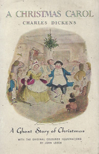

Dickens divided the book into five chapters, which he labelled "staves".
Stave one:
The story begins on a cold and bleak Christmas Eve in London, seven years after the death of Ebenezer Scrooge's business partner, Jacob Marley. Scrooge, an old miser, hates Christmas and refuses an invitation to Christmas dinner from his nephew Fred. He turns away two men who seek a donation from him in order to provide food and heating for the poor, and only grudgingly allows his overworked, underpaid clerk, Bob Cratchit, Christmas Day off with pay to conform to the social custom.
At home that night, Scrooge is visited by Marley's ghost, who wanders the Earth, entwined by heavy chains and money boxes, forged during a lifetime of greed and selfishness. Marley tells Scrooge that he has one chance to avoid the same fate: he will be visited by three spirits and he must listen to them or be cursed to carry chains of his own, much longer than Marley's chains.
Stave two:
The first of the spirits, the Ghost of Christmas Past, takes Scrooge to Christmas scenes of Scrooge's boyhood and youth, reminding him of a time when he was more innocent. The boyhood scenes portray Scrooge's lonely childhood, his relationship with his beloved sister Fran, and a Christmas party hosted by his first employer, Mr. Fezziwig, who treated Scrooge like a son. They also portray Scrooge's neglected fiancée Belle, who ends their relationship after she realises that Scrooge will never love her as much as he loves money. Finally, they visit a now-married Belle with her large, happy family on a recent Christmas Eve.
Stave three:
The second spirit, the Ghost of Christmas Present, takes Scrooge to a joy-filled market of people buying the makings of Christmas dinner and celebrations of Christmas in a miner's cottage and in a lighthouse. Scrooge and the ghost also visit Fred's Christmas party. A major part of this stave is taken up with Bob Cratchit's family feast and introduces his youngest son, Tiny Tim, a happy boy who is seriously ill. The spirit informs Scrooge that Tiny Tim will die soon unless the course of events changes. Before disappearing, the spirit shows Scrooge two hideous, emaciated children named Ignorance and Want. He tells Scrooge to beware the former above all and mocks Scrooge's concern for their welfare.
Stave four:
The third spirit, the Ghost of Christmas Yet to Come, shows Scrooge a Christmas Day in the future. The ghost shows him scenes involving the death of a disliked man. The man's funeral will only be attended by local businessmen if lunch is provided. His charwoman, his laundress, and the local undertaker steal some of his possessions and sell them to a fence. When Scrooge asks the ghost to show anyone who feels any emotion over the man's death, the ghost can only show him the pleasure of a poor couple in debt to the man, rejoicing that his death gives them more time to put their finances in order. After Scrooge asks to see some tenderness connected with any death, the ghost shows him Bob Cratchit and his family mourning the passing of Tiny Tim. The ghost then shows Scrooge the man's neglected grave, whose tombstone bears Scrooge's name. Sobbing, Scrooge pledges to the ghost that he will change his ways to avoid this outcome.
Stave five:
Scrooge awakens on Christmas morning a changed man. He spends the day with Fred's family and anonymously sends a large turkey to the Cratchit home for Christmas dinner. The following day he gives Cratchit an increase in pay and becomes like another father to Tiny Tim. From then on Scrooge begins to treat everyone with kindness, generosity and compassion, embodying the spirit of Christmas.
1901 - Scrooge, or, Marley's Ghost, a short British film that is the earliest surviving screen adaptation.
1908 - A Christmas Carol, silent film with Thomas Ricketts as Scrooge. Now lost.
1910 - A Christmas Carol, a 13-minute silent film version of the story starring Marc McDermott as Scrooge and Charles Ogle as Cratchit, with William Bechtel, Viola Dana, Carey Lee and Shirley Mason.
1913 - Scrooge, film starring Sir Seymour Hicks and retitled Old Scrooge for its U.S. release in 1926.
1914 - A Christmas Carol, film with Charles Rock as Scrooge.
1916 - The Right to Be Happy, the first feature-length film adaptation, directed by and starring Rupert Julian as Scrooge.
1923 - A Christmas Carol, a BBC radio broadcast an adaptation of the story by R. E. Jeffrey.
1923 - A Christmas Carol, film produced in the UK and starring Russell Thorndike, Nina Vanna, Jack Denton and Forbes Dawson.
1928 - Scrooge, short film made in Lee DeForest Phonofilm sound-on-film process, with Bransby Williams as Scrooge (now lost).
1934 - A Christmas Carol, Lionel Barrymore starred as Scrooge in a dramatisation on the CBS Radio Network on 25 December 1934, beginning a tradition he would repeat on various network programs every Christmas through 1953. Only twice did he not play the role: in 1936, when his brother John Barrymore filled in because of the death of Lionel's wife, and again in 1938, when Orson Welles took over the role because Barrymore had fallen ill.
1935 - Scrooge, a British film, the first existing sound version, again starring Seymour Hicks as Scrooge.
1938 - A Christmas Carol, film starring Reginald Owen as Scrooge and Gene Lockhart and Kathleen Lockhart as the Cratchits.
1941 - A Christmas Carol, Decca recording with Ronald Colman as Scrooge. This version used a script which was nearly identical to that used in Ronald Colman's radio broadcast version in 1949.
1944 - A Christmas Carol, an early live television adaptation broadcast by DuMont's New York station WABD on 20 December 1944.
1946 - Christmas Night, a TV adaptation with a ballet and with music by Ralph Vaughan Williams was broadcast on BBC television on 25 December 1946.
1947 - A Christmas Carol, a live television version on DuMont starred John Carradine as Scrooge, and featured David Carradine and Eva Marie Saint, the latter in her TV debut.
1948 - A Christmas Carol, a 1948 live television adaptation which aired on The Philco Television Playhouse starred Dennis King as Scrooge.
1949 - A Christmas Carol, Favorite Story radio broadcast adaptation with Ronald Colman both hosting and starring as Scrooge. This version used a script nearly identical to the one used in Ronald Colman's famous 1941 record album of the story, but a different supporting cast.
1949 - A Christmas Carol, TV broadcast 25 December 1949, is a 30-minute television adaptation that starred Taylor Holmes as Scrooge with Vincent Price as the on-screen narrator.
1950 - A Christmas Carol, a British television version, with Bransby Williams as Scrooge, was televised in 1950.
1951 - A Christmas Carol, with Ralph Richardson as Scrooge was shown as a 30-minute filmed episode of NBC's Fireside Theater in 1951.
1951 - Scrooge, film starring Alastair Sim as Scrooge and Mervyn Johns and Hermione Baddeley as the Cratchits. According to critic A. O. Scott of The New York Times, this film is the best one ever made of the Dickens classic.
1951 - A Christmas Carol, Alec Guinness starred as Scrooge in a BBC radio production from 1951, also broadcast in America, and repeated for several years afterward.
1953 - A Christmas Carol, Theatre Royal, also from BBC radio, starring Laurence Olivier in his only recorded performance as Scrooge.
1954 - A Christmas Carol, a TV musical adaptation starring Fredric March as Scrooge and Basil Rathbone as Marley, was shown on the TV anthology Shower of Stars. The adaptation and lyrics were by Maxwell Anderson, the music by Bernard Herrmann. The first version in colour, it apparently has survived only in black-and-white. March received an Emmy Award nomination for his performance.
1956 - The Stingiest Man In Town, the second musical adaptation. It starred Basil Rathbone and Vic Damone as, respectively, the old and young Scrooge. This was a live episode of the dramatic anthology series The Alcoa Hour.
1958 - A Christmas Carol, a filmed episode of the half-hour anthology series Tales from Dickens, again featuring Basil Rathbone as Scrooge, with Fredric March as narrator.
1959 - Mister Scrooge (alternative name: Shadows / Tiene), an opera by Slovak composer Ján Cikker.
1962 - Mister Magoo's Christmas Carol, an animated musical television special in color featuring the UPA character voiced by Jim Backus, with songs by Jule Styne and Bob Merrill. Other voices were provided by such actors as Jack Cassidy (as Bob Cratchit). The New York Times review says that Mr. Magoo shines as Scrooge.
1964 - Mr. Scrooge, a CBC television musical adaptation, starring Cyril Ritchard (Peter Pan's Captain Hook) as Scrooge, with Alfie Bass and Tessie O'Shea as Bob Cratchit and his wife.
1965 - A Christmas Carol, BBC hour-long radio version adapted by Charles Lefeaux with music composed and conducted by Christopher Whelen, and starring Ralph Richardson as The Storyteller and Scrooge.
1969 - A Christmas Carol, a 45-minute children's afternoon TV special directed by Zoran Janjic and produced by Australia's Air Programs and aired in the U.S. on CBS on 13 December 1970. Ron Haddrick voiced Scrooge for the Australian production.
1970 - Scrooge, a musical film adaptation starring Albert Finney as Scrooge and Alec Guinness as Marley's Ghost.
1971 - A Christmas Carol, an Oscar-winning animated short film by Richard Williams, with Alastair Sim reprising the role of Scrooge.
1977 - A Christmas Carol, a TV adaptation by the BBC with Sir Michael Hordern, who had played Marley's Ghost in two other versions, as Scrooge.
1978 - Rich Little's Christmas Carol, an HBO television special in which impressionist Rich Little plays several celebrities and characters in the main roles.
1978 - The Stingiest Man in Town, an animated made-for-TV musical produced by Rankin-Bassm starring Walter Matthau as the voice of Scrooge and Tom Bosley as the narrator. Scrooge was drawn to physically resemble Matthau. This had originally been done as a live-action musical on television in 1956.
1979 - Bugs Bunny's Christmas Carol, an animated television special featuring the various Looney Tunes characters, with the role of Scrooge going to Yosemite Sam.
1979 - A Christmas Carol, an opera by Thea Musgrave.
1982 - A Christmas Carol, Australian made-for-television animated film from Burbank Films Australia.
1983 - Mickey's Christmas Carol, an animated featurette film featuring the various Walt Disney characters with Scrooge McDuck playing the role of Ebenezer Scrooge, Mickey Mouse as Bob Cratchit and Goofy as Jacob Marley and Donald Duck as Fred.
1984 - A Christmas Carol, starring George C. Scott as Ebenezer Scrooge, David Warner and Susannah York as the Cratchits, with Edward Woodward as the Ghost of Christmas Present. Scott received an Emmy Award nomination for his performance. Clive Donner, who had been the film editor for the 1951 film Scrooge, directed. Novelist and essayist Louis Bayard described this adaptation as "the definitive version of a beloved literary classic", praising its fidelity to Dickens' original story, the strength of the supporting cast, and especially Scott's performance as Scrooge.
1988 - A Christmas Carol, a one-man stage performance by English actor Patrick Stewart which has been performed in the United Kingdom and the United States on occasion since 1988.
1988 - Scrooged, an American Christmas comedy film directed by Richard Donner and written by Mitch Glazer and Michael O'Donoghue. a modern retelling that follows Bill Murray as Frank Cross, a cynical and selfish television executive, who is visited by a succession of ghosts on Christmas Eve intent on helping him regain his Christmas spirit.
1990 - A Christmas Carol, another BBC Radio production, broadcast on BBC Radio 4 on 22 December 1990, starred Michael Gough as Scrooge and Freddie Jones as The Narrator. This production was subsequently re-broadcast on BBC Radio 7 and later on BBC Radio 4 Extra.
1992 - The Muppet Christmas Carol, a musical film featuring various Muppet characters, with Michael Caine as Scrooge, Kermit the Frog as Bob Cratchit, Miss Piggy as Mrs. Cratchit and Gonzo as Charles Dickens.
1992 - Brer Rabbit's Christmas Carol, an animated television movie directed by Al Guest and starring the voice of Christopher Corey Smith as Brer Rabbit.
1992 - Scrooge: The Musical, a British stage musical adapted from the 1970 film and starring Anthony Newley.
1994 - A Flintstones Christmas Carol, an animated television special based on The Flintstones series produced by Hanna-Barbera Productions, featuring the series characters putting on a play based on the novel.
1994 - A Christmas Carol, an animated film version produced by Jetlag Productions, written by Jack Olesker.
1994 - A Christmas Carol: The Musical, a Broadway musical adaptation with music by Alan Menken and lyrics by Lynn Ahrens, ran at The Theatre at Madison Square Garden, New York City yearly until 2003. Starring as Scrooge were Walter Charles (1994), Terrence Mann (1995), Tony Randall (1996), Hal Linden and Roddy McDowell (alternating) (1997), Roger Daltrey (1998), Tony Roberts (1999), Frank Langella (2000), Tim Curry (2001), F. Murray Abraham (2002) and Jim Dale (2003). The 2004 television version of the musical starred Kelsey Grammer as Scrooge.
1995 - A Christmas Carol, staged version by John Mortimer for the Royal Shakespeare Company.
1996 - A Christmas Carol, Focus on the Family Radio Theatre adapted the story in a production hosted by David Suchet, narrated by Timothy Bateson, and with Tenniel Evans as Scrooge. This production credits Noel Langley's screenplay for the 1951 film as well as Dickens' original book.
1997 - A Christmas Carol, an animated film version featuring the voice of Tim Curry as Scrooge as well as the voices of Whoopi Goldberg, Michael York and Ed Asner.
1997 - Ms. Scrooge, a 1997 American television film that aired on USA Network on 10 December 1997. The film changes the roles of Ebenezer Scrooge and Jacob Marley into female counterparts. The film is also notable for mentioning that Tiny Tim is dying of a "slow-growing congenital tumor", instead of an unnamed condition.
1998 - The Passion of Scrooge (or A Christmas Carol), a chamber opera by Jon Deak for one baritone and chamber orchestra.
1998 - Ebenezer, a 1998 Canadian made-for-television re-telling of A Christmas Carol with Jack Palance giving a performance as Ebenezer Scrooge, with a Western flavour.
1999 - A Christmas Carol, a television movie directed by David Jones, starring Patrick Stewart as Ebenezer Scrooge. Inspired by Patrick Stewart's one-man stage adaptation of the story, but featuring a full supporting cast. This was the first version of the story to make use of digital special effects. Stewart was nominated for a Screen Actors Guild award for his performance.
2001 - Christmas Carol: The Movie, an animated film version produced by Illuminated Films; screenplay by Robert Llewellyn & Piet Kroon; with the voices of Simon Callow, Kate Winslet and Nicolas Cage.
2002 - Charles Dickens' A Christmas Carol, made for TV animated film created by DIC Entertainment. It premiered on television on Nickelodeon Sunday Movie Toons and was released on DVD and VHS shortly afterward by MGM Home Entertainment.
2002 - A Christmas Carol, a bonus feature on the DVD release of Peter Ackroyd's docu-drama Dickens, portraying a Christmas dinner at Gads Hill Place where Charles Dickens recites the novella to his family and friends. The author is portrayed by Anton Lesser, reprising his role from the docu-drama.
2004 - A Christmas Carol: The Musical, starring Kelsey Grammer. This version is unique in that Scrooge meets all three spirits in human form both before and after his night-time encounters, much as Judy Garland encounters Frank Morgan, Ray Bolger, Jack Haley, Bert Lahr and Margaret Hamilton in The Wizard of Oz.
2006 - A Christmas Carol, a computer animated film adaptation, directed by Ric Machin, featuring anthropomorphic animals in the lead roles.
2006 - A Sesame Street Christmas Carol, a direct to DVD special featuring Oscar the Grouch in the Scrooge role.
2008 - A Christmas Carol, David Jason recorded a 10 part abridged reading for BBC Radio 4's Book at Bedtime.
2009 - A Christmas Carol, a performance capture film written for the screen and directed by Robert Zemeckis, and starring Jim Carrey as Ebenezer Scrooge and the three ghosts. From Walt Disney Pictures, it was released in November 2009 in Disney Digital 3-D. This adaptation of the story includes such scenes as Scrooge being chased through London by a haunted carriage, and Scrooge being dropped into his own grave by the Spirit of Yet To Come.
2011 - A Christmas Carol, an episode of the British science fiction television programme Doctor Who. It was the sixth Doctor Who Christmas special since the programme's revival in 2005, and was broadcast on 25 December 2010 on both BBC One and BBC America.
2013 - The Smurfs: A Christmas Carol, a direct to DVD imagining of the story, as told by and featuring the Smurfs.
2014 - A Christmas Carol, BBC Radio 4 broadcast of a new adaptation by Neil Brand for actors, the BBC Singers and the BBC Symphony Orchestra, recorded before an audience in the BBC Maida Vale Studios and directed by David Hunter. The cast included Robert Powell as Scrooge, Ron Cook as Marley and Tracy-Ann Oberman as Mrs. Fezziwig.
2014 - A Christmas Carol, by Iain Bell, with libretto by Simon Callow, which premiered at Houston Grand Opera on 5 December 2014, with Heldentenor Jay Hunter Morris and former Houston Grand Opera Studio member Kevin Ray alternating in the single role of the Narrator.
2015 - A Christmas Carol, Kathleen Turner starred as Scrooge in a live performance presented as a radio drama at the Greene Space in New York City; a recording of the performance was broadcast on WNYC on 24 and 25 December 2015.
2015 - A Christmas Carol, an adaptation by Patrick Barlow, starring Jim Broadbent as Scrooge at the Noël Coward Theatre in London.
2017 - A Christmas Carol, a new adaptation by Jack Thorne, directed by Matthew Warchus for The Old Vic. Cast included Rhys Ifans as Scrooge. This production is due to be revived for Christmas 2018 with Stephen Tompkinson as Scrooge.
2017 - A Christmas Carol, a new adaptation by David Edgar, directed by Rachel Kavanaugh for the Royal Shakespeare Company. Cast included Phil Davis as Scrooge. This production is due to be revived for Christmas 2018.
2017 - The Man Who Invented Christmas, film telling the story of Charles Dickens' creation of A Christmas Carol. Starring Dan Stevens and Christopher Plummer.
2017 - A Christmas Carol, a new adaptation by Deborah McAndrew, directed by Amy Leach for Hull Truck Theatre. This production will transfer to the West Yorkshire Playhouse's Pop Up Theatre for Christmas 2018. This version relocates the story to the North of Victorian England.
2018 - A Christmas Carol, film version based on Charles Dickens’s own performance adaptation, Simon Callow and director-designer Tom Cairns have created a one-man theatrical extravaganza of festive storytelling.
2018 - A Christmas Carol, film version directed by David Izatt. In this retelling of Dickens’ holiday tale, Scottish businessman Mr. Scrooge faces big changes when three spirits visit him at Christmastime. Music by Roger Taylor.